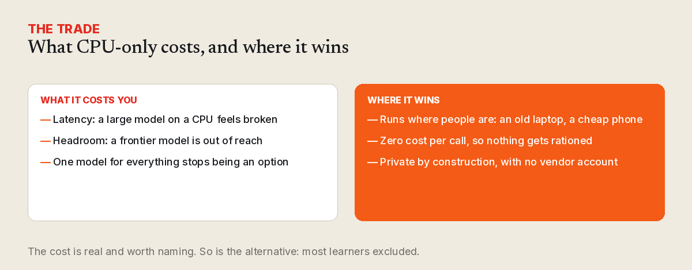

Why CPU-only AI is the right default for learning software
GPUs are fast and expensive. For the software most learners actually use, a small model on a CPU is the better trade.

Almost every conversation about running a model starts with a GPU. It is the wrong starting point for education. The learners who need software most are the ones least likely to have a data centre — or a fast connection, or a new laptop. If your tool only works with an accelerator behind it, you have quietly excluded most of the people you were trying to reach.
So we start from the opposite end: what is the smallest machine this has to run on, and what is the largest model that still fits?

The economics are backwards for learning
In a commercial product, the cost of inference is a line item you can pass on. In a learning tool, it is a wall. Every request that costs money is a request that someone has to fund — and free educational software rarely has anyone funding it. A model that runs on a CPU costs nothing per call and nothing per learner, forever.
That changes what you can build. You stop rationing the feature. You stop thinking about who deserves the expensive path.
What CPU-only actually costs you
Latency, and headroom. A large model on a CPU is slow enough to feel broken; a frontier model is simply out of reach. You give up the ability to ask one giant model to do everything, and you accept that quality is bounded by the hardware you chose.
That is a real cost, and it is worth naming plainly rather than pretending it away.
Where it wins
- It runs where people are. A small VPS, an old laptop, a cheap phone. No accelerator, no vendor account.
- It is private by construction. Nothing leaves the machine, so there is nothing to leak and nothing to govern.
- It is durable. No per-token bill means no reason for the feature to be switched off later.
- It forces good scoping. When the model is small, the task has to be narrow — and narrow tasks are easier to evaluate honestly.
The honest trade
CPU-only AI is not better than a GPU cluster. It is better for a class of products — the ones that have to work for everyone, cost nothing to run, and outlive whatever hardware is fashionable this year. For learning software, that is most of them.
Start with the constraint. It will make the software better than starting with the ceiling.

Comments
Powered by GitHub Discussions. Sign in with GitHub to join the conversation.